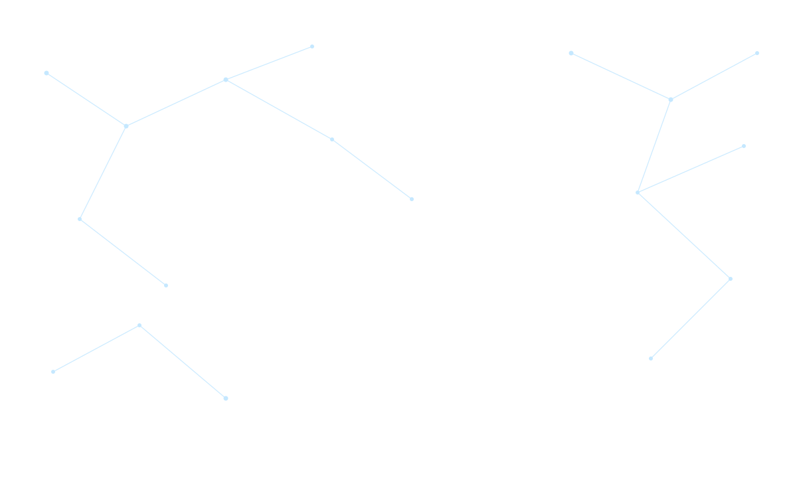

Likewize
Chargeback decision engine
Problem
Chargeback decisioning depended on manual review.
Approach
Automated it with a SQL-based decision engine.
Result
Manual review reduced by 80–85%, and overall chargeback volume cut by 40%.

Fraud & risk analytics
Data Analyst (Fraud & Risk Prevention)
Data that drives decisions.
Headlines refresh daily. None are loaded right now.
$1M+
Fraud savings
80–85%
Less manual review
40%
Fewer chargebacks
25%
Faster decisions
22%
More fraud visibility
4+ years
At Likewize
02
A public pattern, written for analysts. No customer data and no performance numbers.
The weekly pattern loads from a data file. None is available in this view yet.
01
Data Analyst with 4+ years at Likewize specializing in fraud and risk analytics. I build the rules, reporting, and data solutions that power Customer Care and Fraud Operations across the US and Canada.
03
Open a role to read the work. Only one stays open at a time.
04
Choose a project. Problem, approach, and result follow the work at Likewize.
Likewize
Chargeback decisioning depended on manual review.
Automated it with a SQL-based decision engine.
Manual review reduced by 80–85%, and overall chargeback volume cut by 40%.
Likewize · AWS
Fraud was harder to see across the claims process.
Built a fraud detection tool on AWS using machine learning models trained on historical claims data.
Fraud visibility increased by 22% across the claims process.
Likewize · Vendors
Global fraud coverage had to be rolled out with Product, IT, and specialist vendors.
Lead Global Fraud Solutions and integrations with Recipero, GSMA, LexisNexis, Equifax, and TransUnion, from requirements and testing through rollout.
Requirements, testing, and rollout done with Product, IT, and the vendors.
Likewize · Power BI
Client reviews and senior leadership needed CSAT, DSAT, NPS, and SLA reporting in one place.
Built that customer and client reporting, and the Power BI dashboards used in client reviews.
Decision-making time cut by 25%.
Illustrative example
These rows are generated in your browser. They are synthetic example data, not claims, customers, or results. Drag the threshold to see how a simple “score at or above the line” rule changes the counts.
Academic project
Python analysis of airline route data for one carrier. NetworkX graphs describe the network and support a prediction of the next hub for expansion.
View repository (opens in a new tab)Academic project
Data munging and analysis of a Kaggle board-games dataset from BoardGameGeek.
View repository (opens in a new tab)Academic project
Python cleaning and analysis of a census dataset by age group, sex, and employment, using regular expressions and Matplotlib.
View repository (opens in a new tab)Academic project
scikit-learn classifier on a survey of data science workers and learners. The task predicts whether yearly salary is above $100K.
View repository (opens in a new tab)Academic project
Python scrape of the U.S. National Parks website into a CSV of park name, category, description, and address fields. Missing values are left blank.
View repository (opens in a new tab)05
No skill matches that filter.
Vendors
06
The University of Texas at Arlington
2021 – 2023
Dayananda Sagar College of Engineering · Bengaluru, India
2017 – 2021
Chen, V. C. P., & Jones Jr., E. C., & Gudikandula, S., & Sharma, V., & Smalls, R., & Sigler, J. (2024, June). Training Teachers to integrate a Sustainability Assessment for Green Building and Retrofitting Project into a K-12 Classroom. Paper presented at 2023 ASEE GSW, Denton, TX.
View the paper (opens in a new tab) doi.org/10.18260/1-2-1153-46328
07 · Updated daily
Payment fraud, scams, chargebacks, identity and account takeover, financial crime, and a few data and AI headlines. Pulled from public news feeds. Not endorsements.
Loading headlines…
No headlines in this topic right now.
Headlines refresh daily from public news feeds. None are loaded right now.
08
Email or LinkedIn.